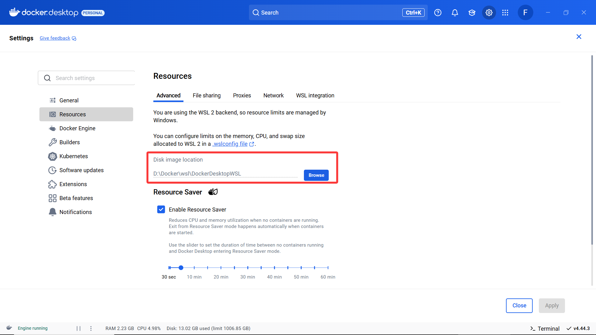

MathModelAgent 部署脚本 (Docker 版本)
欢迎体验 MathModelAgent 的自动化部署！这是原项目推荐的DOCKER布置流程的稍微详细一点版本，照着下面做，你会部署好 MathModelAgent 的。但是——据我体验依据于docker配置的体验不如本地配置的体验...比如py或者其他bat脚本...
DOCKER部署流程
Docker自定义目录安装(ctrl+鼠标左键查看视频)
指定安装和资源路径，避免占满 C 盘。示例命令（路径可自定义）：
xxxxxxxxxx11start /w "" "Docker Desktop Installer.exe" install --accept-license --installation-dir="D:\Docker\"Docker自定义下载卷目录、镜像配置(ctrl+鼠标左键查看视频)
在 Docker Desktop 的 设置 > 资源 中设置存储路径，节省空间：

配置镜像源：
编辑 %USERPROFILE%\.docker\daemon.json 或在 Docker Desktop 的 设置 > Docker Engine 中粘贴以下配置，加速镜像拉取：
xxxxxxxxxx171{2 "builder": {3 "gc": {4 "defaultKeepStorage": "20GB",5 "enabled": true6 }7 },8 "experimental": false,9 "registry-mirrors": [10 "https://docker.1ms.run",11 "https://docker.xuanyuan.me",12 "https://hub.rat.dev",13 "https://dislabaiot.xyz",14 "https://doublezonline.cloud",15 "https://xdark.top"16 ]17}.assets/doker engine.png)
配置后端 .env.dev：
复制
backend\.env.dev.example为backend\.env.dev。编辑
backend\.env.dev，配置以下关键项（参考下图示例）：REDIS_URL：Docker 使用redis://redis:6379/0，本地使用redis://localhost:6379/0。模型和 API 密钥：如
COORDINATOR_MODEL,COORDINATOR_API_KEY,MODELER_MODEL,MODELER_API_KEY等。
示例配置：.assets/docker env dev配置.png)
运行自动部署脚本：
将 mma_setup_docker_win.bat 放入 MathModelAgent 根目录，双击执行。
xxxxxxxxxx91Checking if Docker is installed and running...2Docker version 28.1.1, build 4eba3773Verifying project directory...4Configuring Docker registry mirrors...5daemon.json already exists. Please ensure it contains valid registry mirrors6Stopping and removing existing containers if any...7Note: Data is persisted in volumes and will not be lost when containers are removed.8...
关闭命令行窗口。docker container 点击映射网页访问MMA即可使用！
Docker刷新env配置文件（如果你后续改了env.dev文件）(ctrl+鼠标左键查看视频)
常见问题（避坑指南）
坑点做法：直接双击 Docker Desktop Installer.exe 默认安装。
问题：
默认安装将Docker文件和镜像存储在
%USERPROFILE%\AppData\Local\Docker\wsl\，C 盘空间告急！部署约需14GB后续如果有其他镜像，会更大...，默认存储在%USERPROFILE%\AppData\Local\Docker\wsl\.assets/space.png)
未配置镜像源，导致拉取镜像缓慢或失败。
注：硬盘空间不足时，可运行以下命令：
xxxxxxxxxx21docker system prune -a2docker volume prune